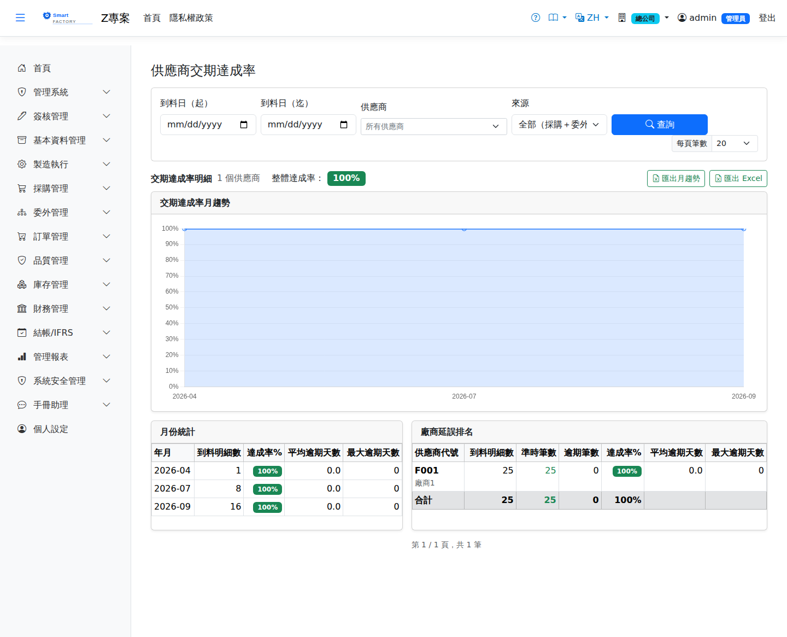

供應商交期達成率Supplier Delivery Rate
路由：/SupplierDeliveryRate | 各供應商準時交貨率統計Route: /SupplierDeliveryRate | On-time delivery statistics per supplier
統計採購與委外的交期達成率（OTD Rate），含「月份趨勢折線圖」與「廠商延誤排名」兩個維度，作為供應商評鑑依據。Measures the on-time delivery rate (OTD rate) of purchases and outsourcing, with a monthly trend line and a supplier delay ranking, as input to supplier evaluation.
母體是「這段期間應該交的單」，不是「這段期間收到的貨」：The population is what was due in the period, not what was received in it:查詢區間比對的是預交日，每張採購明細（委外則是每張委外採購單）只計一次，三種結果： the date range is matched against the promised date, and each purchase order line (or, for outsourcing, each outsource PO) is counted exactly once, with three possible outcomes:
- 已交清——以收齊那一天比對預交日。不是第一次收貨：首批準時、尾批拖三個月的單會被判成遲交。Fully received — the date the last receipt completed the line is compared with the promised date. Not the first receipt: a line whose first batch arrived on time but whose last batch took three months counts as late.
- 已過預交日仍未交清——算遲交，遲延天數以今天計算，會隨著拖延持續增加。Past the promised date and still not complete — counted as late, with the overdue days measured against today, so they keep growing while the delay continues.
- 尚未到期——不列入。還沒有結果，列入會讓達成率隨「開了幾張未來的單」上下浮動。Not yet due — excluded. There is no outcome yet, and including these would make the rate drift with however many future orders happen to be open.
2026-09-21 口徑變更，歷史數字會比以前低：The basis changed on 2026-09-21, so historical figures are lower than before:舊口徑只看已經收到的貨，於是「拖著不交」的單完全不進分母——供應商拖得越久，分母越乾淨、達成率越好看。曾出現同一家供應商在「採購逾期跟催」上有兩筆逾期、在這張表上卻是 100% 的情形。新口徑把那些單算進來，所以數字下降是修正而不是退步。供應商評核的「交期」構面同源，會跟著一起降。 The old basis looked only at goods already received, so an order that was simply never delivered never entered the denominator — the longer a supplier stalled, the cleaner the denominator and the better the rate looked. One supplier showed two overdue lines on the Overdue Purchase Orders report while this report showed 100%. The new basis counts those lines, so a lower number is a correction, not a decline. The delivery dimension of supplier evaluation shares this basis and falls with it.

供應商交期達成率畫面截圖（示意，實際欄位/資料依權限與查詢條件而異）Supplier delivery rate screenshot (illustrative; actual fields and data vary by permission and query criteria)
查詢Search
1
查詢列可依「預交日區間、供應商、來源」過濾；來源可選「全部／採購進貨（過帳）／委外收貨（已確認以上，對交委外採購單預交日）」。The search bar filters by promised date range, supplier and source; the source can be All, Purchase receipt (posted) or Outsource receipt (confirmed or later, measured against the outsource PO delivery date).
2
月趨勢折線圖顯示各月 OTD Rate；月份統計表另列平均逾期天數、最大逾期天數（僅計逾期筆）。The monthly trend line shows the OTD rate per month; the monthly table adds the average and maximum overdue days (counting late lines only).
3
廠商延誤排名以逾期筆數多者在前，其次平均逾期天數，供評核輸入；月趨勢與廠商表可分別匯出 Excel。The supplier delay ranking sorts by the number of late lines first and then by average overdue days, as input to evaluations; the monthly trend and the supplier table can each be exported to Excel.
欄位說明Field reference
查詢條件Query criteria
| 條件Condition | 說明Guide |
|---|---|
| 預交日（起 / 迄）Promised date (from / to) | 納入統計的預交日區間——決定「哪些單該在這段期間交」，與實際何時到料無關。留白時預設近 30 天，不是「不限起日」The range of promised dates included, which decides which lines were due in the period regardless of when the goods actually arrived. Left blank, it defaults to the last 30 days rather than to no lower bound. |
| 供應商Supplier | 只看單一供應商；留空為全部Limits the view to one supplier; leave blank for all |
| 來源Source | 統計涵蓋的單據來源（採購進貨、委外收貨等）Document sources included in the statistics (purchase receipts, outsource receipts …) |
月趨勢欄位Monthly trend fields
| 欄位Field | 說明Guide |
|---|---|
| 年月Month | 統計月份Statistics month |
| 應交明細數Due Lines | 預交日落在該月的明細行數（月份也以預交日分組）Number of lines whose promised date falls in that month; the monthly grouping also follows the promised date |
| 達成率%Attainment % | 準時筆數 ÷ 應交明細數On-time lines ÷ due lines |
| 平均逾期天數 / 最大逾期天數Avg Overdue Days / Max Overdue Days | 該月逾期案件的平均與最壞情形，用於判斷是普遍性延誤或個案The average and worst case of overdue items in the month, showing whether delays are systematic or isolated |
供應商明細欄位Supplier detail fields
| 欄位Field | 說明Guide |
|---|---|
| 供應商代號Supplier | 統計對象Group by |
| 應交明細數 / 準時筆數 / 逾期筆數Due Lines / On-Time / Late | 該供應商應交筆數的拆解，兩者相加恆等於應交明細數Breakdown of the lines due from this supplier; the two always add up to the due lines |
| 達成率%Attainment % | 準時筆數 ÷ 應交明細數，是供應商評核「交期」構面的口徑來源On-time lines ÷ due lines, the basis of the delivery dimension in supplier evaluation |
| 平均逾期天數 / 最大逾期天數Avg Overdue Days / Max Overdue Days | 逾期案件的嚴重程度Severity of the overdue item |
存成常用查詢Saving the query
查詢列上方有「我的常用查詢」與「儲存此查詢」，可把這一組條件存起來下次一鍵重跑。存檔時必須選一個相對期間（例如「上個月」），不是固定日期——否則下個月點開還是同一段期間的資料。用法與注意事項見常用查詢。Above the search bar are "My saved queries" and "Save this query", which store the current criteria for one-click reuse. You must choose a relative period when saving (for example "last month") rather than fixed dates, otherwise opening it next month would still show the same stretch of time. See saved queries for how they work and what to watch for.